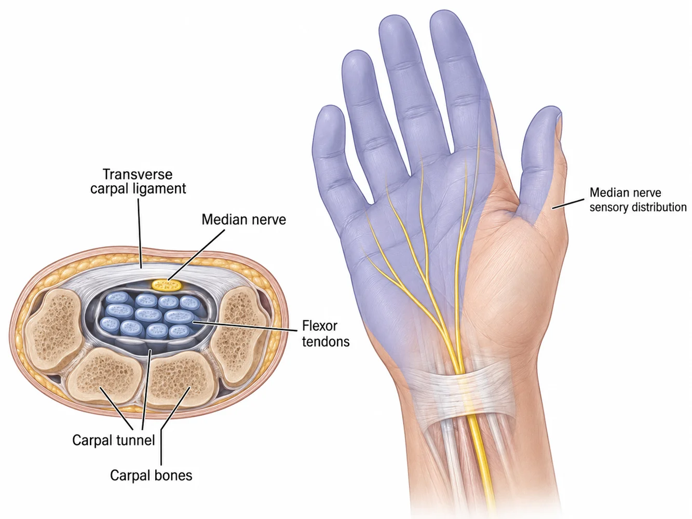
Median nerve
Carpal tunnel syndrome
Numbness, tingling, night symptoms, hand weakness, or symptoms into the thumb, index, long, and radial side of the ring finger from median nerve compression at the wrist.
Hand and wrist symptoms can interfere with sleep, gripping, typing, lifting, driving, work, and daily life. Dr. James Barnes treats selected hand and wrist conditions with clear explanations, practical nonsurgical options, injections when appropriate, and selected outpatient procedures.
This page is intentionally focused on the hand and wrist problems Dr. Barnes commonly treats. Many of these conditions can be evaluated locally with an exam, X-rays when needed, splinting or bracing, injections, therapy guidance, or selected outpatient procedures.
Grouped by the symptoms patients usually notice first: numbness, catching, pain with gripping, thumb-side wrist pain, and pain after a fall.

Numbness, tingling, night symptoms, hand weakness, or symptoms into the thumb, index, long, and radial side of the ring finger from median nerve compression at the wrist.
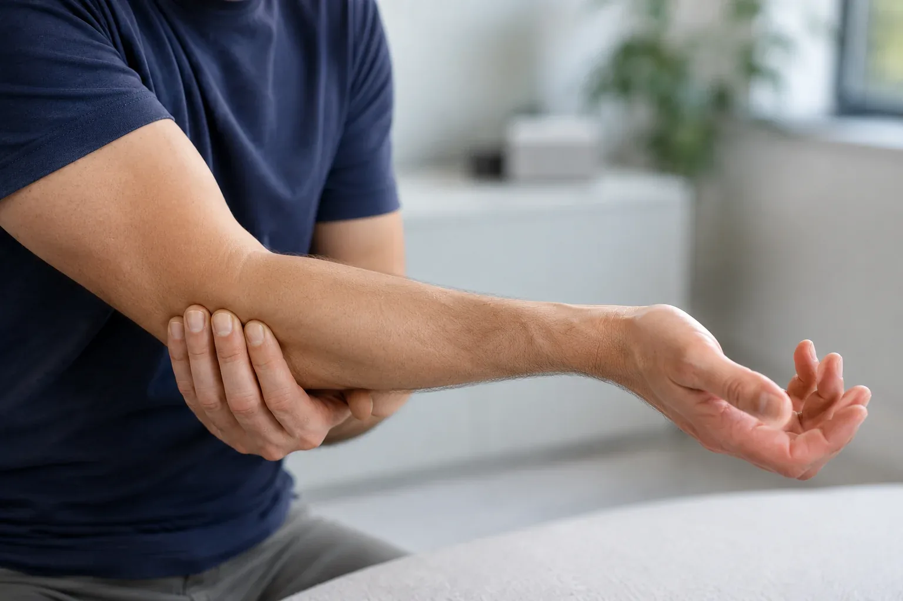
Ulnar nerve irritation at the elbow, often causing numbness, tingling, or weakness into the ring and small fingers.
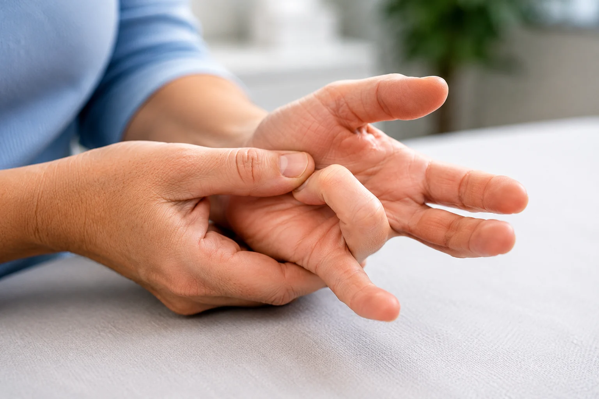
Painful catching, popping, stiffness, or locking of a finger, usually felt near the base of the finger in the palm.
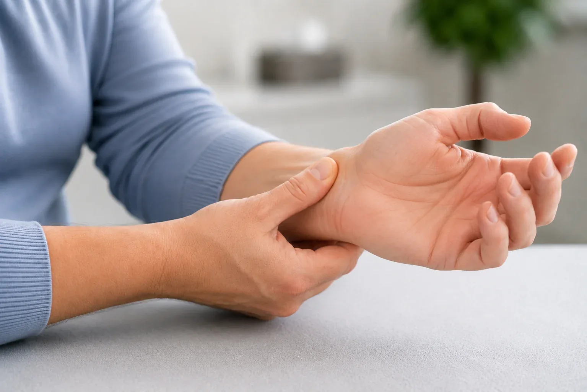
Thumb-side wrist pain, commonly called De Quervain’s tenosynovitis, often worse with lifting, gripping, twisting, or caring for children.
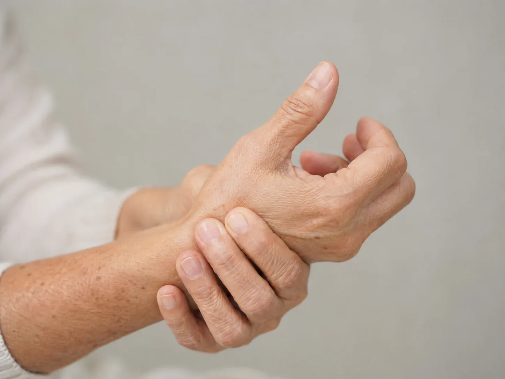
Pain at the base of the thumb with jars, keys, pinching, gripping, and daily hand use. Treatment may include bracing, activity changes, and CMC injections.
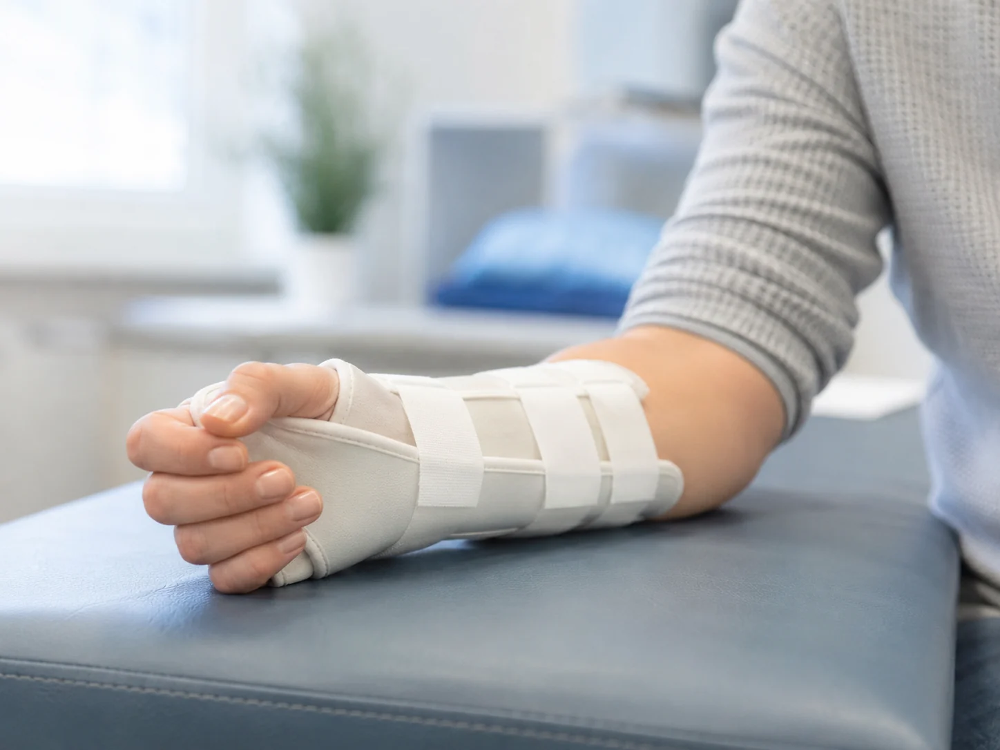
Evaluation and management of selected wrist fractures, including splinting, casting, repeat imaging, and surgery when appropriate.
Hand and wrist symptoms overlap. Numbness may come from the wrist, elbow, neck, or more than one location. Thumb pain may be arthritis, tendon irritation, or a recent injury. The goal is to localize the problem and match treatment to severity, function, and goals.
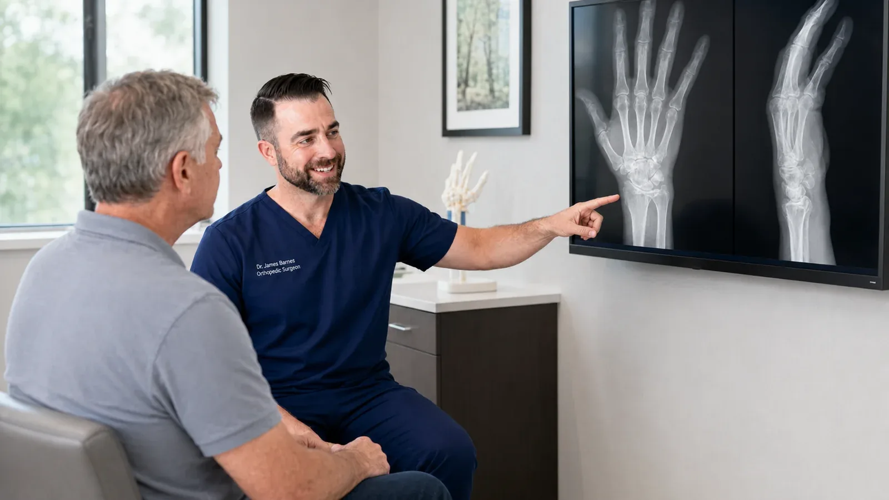
Care may include bracing, activity modification, injections, casting, or selected outpatient procedures depending on the diagnosis and severity.
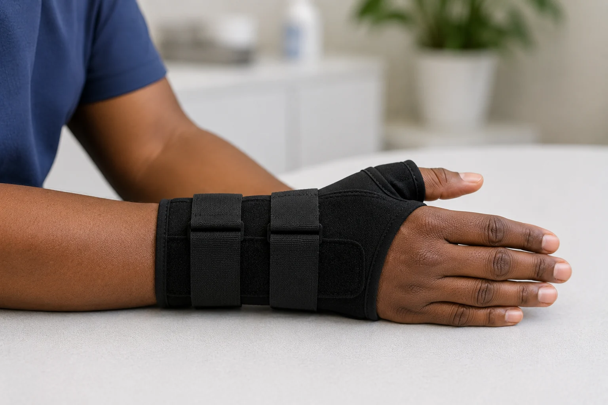
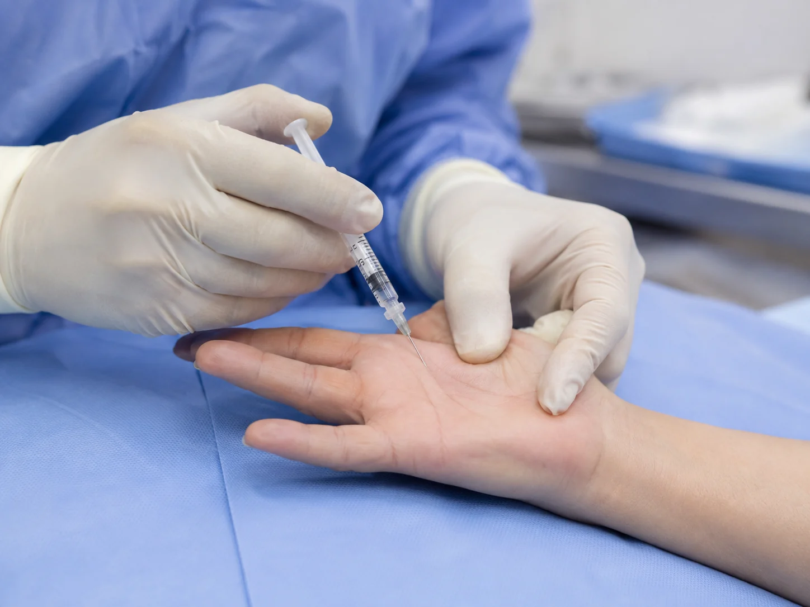
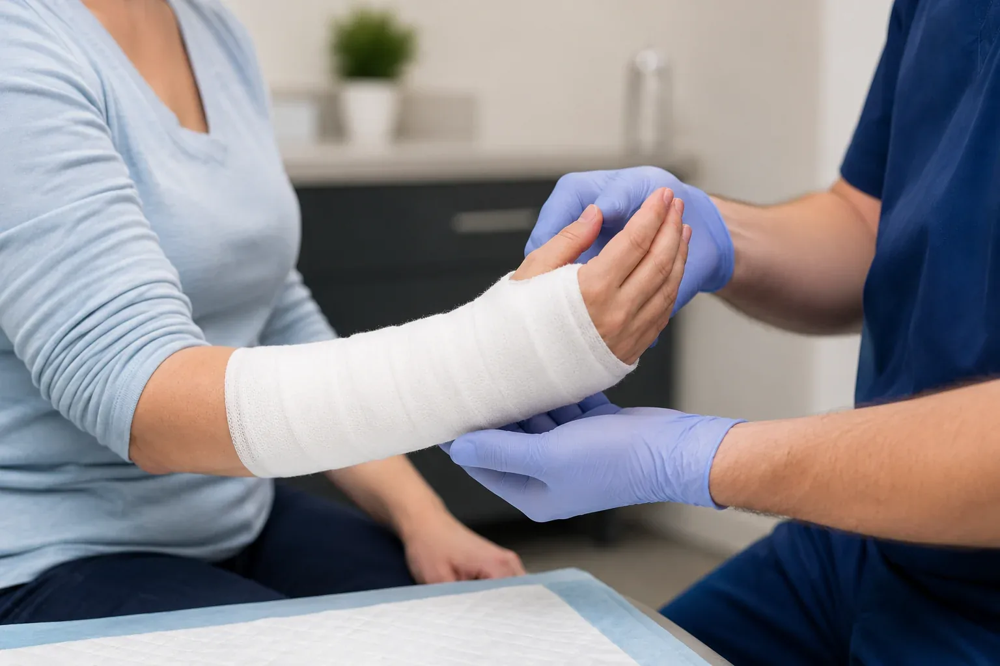
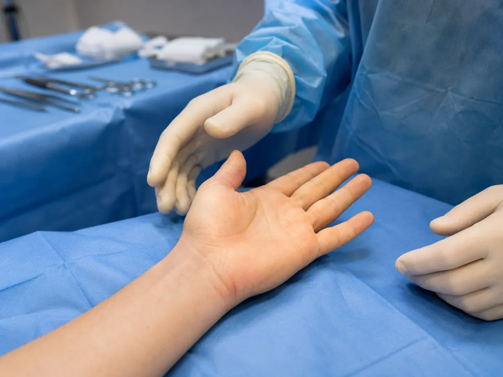
A straightforward process helps patients understand what is causing the problem and what should happen next.
History and exam help separate nerve compression, tendon irritation, arthritis, and fracture pain.
X-rays are important for arthritis, deformity, and fracture evaluation. Nerve studies may be used for selected nerve compression symptoms.
Bracing, activity modification, injections, medications, and therapy guidance may be used depending on the diagnosis.
Selected outpatient procedures may be reasonable when symptoms persist, function is limited, or nerve compression is severe.
Classic carpal tunnel symptoms affect the thumb, index finger, long finger, and thumb-side of the ring finger. The small finger is typically not part of the median nerve sensory distribution, which is one reason a careful history and exam matter.
Clear scope helps set expectations and supports referral when a more specialized hand surgery pathway is the right fit.
Some problems are best handled by a dedicated hand and upper-extremity specialist. If the diagnosis falls outside Dr. Barnes’ focused hand and wrist scope, the goal is to identify that clearly and help guide the next step rather than overpromise.
Common questions patients ask about numbness, arthritis, injections, fractures, and recovery.
Carpal tunnel usually affects the thumb, index, long, and thumb-side of the ring finger. Cubital tunnel usually affects the small finger and the small-finger side of the ring finger. Some patients have symptoms from both areas or from the neck, so exam findings matter.
Carpal tunnel release may be considered when symptoms persist despite bracing and activity changes, when nerve studies are concerning, or when there is weakness, muscle loss, constant numbness, or progressive symptoms.
Cubital tunnel syndrome is irritation or compression of the ulnar nerve near the inside of the elbow. Symptoms often include numbness or tingling in the ring and small fingers, worse with elbow flexion, phone use, or sleeping with the elbow bent.
No. Many trigger fingers improve with splinting, activity modification, time, or steroid injection. Surgery is usually reserved for persistent locking, recurrent symptoms, or cases where injections are not appropriate or have failed.
It is tendon irritation on the thumb side of the wrist. It often hurts with lifting, gripping, twisting, or thumb motion. Treatment may include activity modification, thumb spica bracing, anti-inflammatory strategies, injection, and rarely surgery.
Thumb CMC arthritis usually causes pain at the base of the thumb with pinching, jars, keys, writing, gripping, or opening packages. Treatment may include bracing, topical anti-inflammatory medication, hand therapy guidance, and steroid injection.
No. Some distal radius fractures are stable and can be treated with splinting, casting, and repeat imaging. Surgery is considered when alignment, stability, joint involvement, function, medical factors, and patient goals support it.
Yes. Bring prior X-rays, MRI or CT reports, nerve conduction studies, operative notes, injection records, therapy notes, and any brace you are using. Prior information can prevent unnecessary repeat testing and makes the visit more useful.
Sometimes. Same-day injections depend on the diagnosis, exam, medications, medical conditions, timing of prior injections, and whether imaging or other workup is needed first.
Urgent evaluation is appropriate for major deformity, open wounds, severe swelling, numbness after trauma, loss of circulation, inability to move fingers, suspected dislocation, or rapidly worsening pain.
Schedule an orthopedic evaluation with Dr. Barnes in Lake Havasu City.